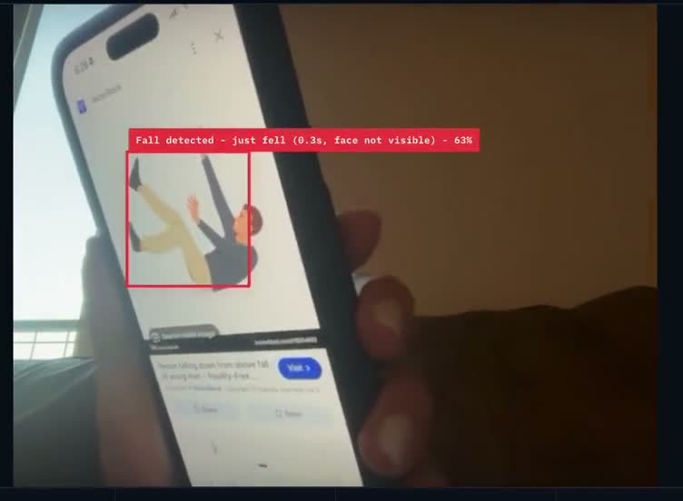
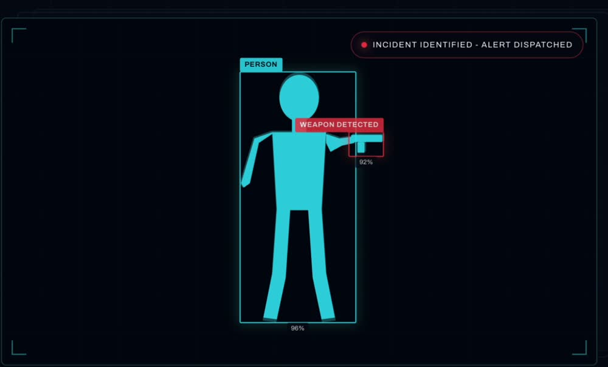

Hello, I'm Ioanna
I study math and computer science at UC San Diego, and I can't leave a good question alone. So I build the thing that answers it — the model, the architecture around it, and the interface that makes it trustworthy.


A model can be accurate and still useless. If the alert reaches the wrong person, arrives too late, or gives no reason for its confidence, nobody acts on it. That gap between a correct prediction and a useful one is the part of the work I care about most.
So I tend to build the whole path. On Perceptra I set the product direction, drew the architecture from camera to alert, decided what we would detect first, and then wrote the pose-detection pipeline myself. On GeoSync the modeling only mattered because it ended as a map a parent could read. On WildSafe the hard problem was not classification but keeping inference alive inside a memory-constrained container.
My background runs across computer vision, signal processing, and neural data analysis. The through-line is the same in all of it: finding the signal, then making it mean something to someone.